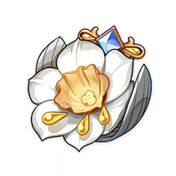
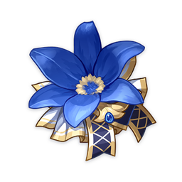

Genshin Impact · Versión 7.2
Análisis del Rol y Escalado
Escoffier es un personaje de elemento Cryo originario de Fontaine que utiliza Lanza y se posiciona en el tier T0.5 (S) Sub-DPS dentro del rol de Sub-DPS & Healer Cryo Especialista en Freeze (-55% RES Hydro/Cryo). Su rendimiento en combate gira en torno a este eje principal: Curación y Sub-DPS escalan con ATQ% (2,000+ ATQ); brilla al llevar 4 Hydro/Cryo.
Para maximizar su aporte en el equipo, la configuración prioritaria combina Sinfonista de Aromas con el conjunto de artefactos Golden Troupe (4 piezas), respetando la jerarquía de estadísticas Recarga de Energía (160%–180%+) > Prob. Crítica = Daño Crítico > ATQ%. y subiendo sus habilidades en orden: Habilidad Elemental (E) >= Definitiva (Q) >>> Ataques Normales.
Mejores Armas
Opciones recomendadas ordenadas por rendimiento según el meta actual y compatibilidad con sus rotaciones:
-
 Sinfonista de Aromas ★★★★★BiS Firma608 ATQ base, 66.2% Daño Crítico; +24% ATQ off-field y +32% ATQ extra al activo al curar.
Sinfonista de Aromas ★★★★★BiS Firma608 ATQ base, 66.2% Daño Crítico; +24% ATQ off-field y +32% ATQ extra al activo al curar. -
 Báculo de Homa ★★★★★Alternativa 5★608 ATQ base, 66.2% Daño Crítico; sólido aporte de Daño Crítico y ATQ.
Báculo de Homa ★★★★★Alternativa 5★608 ATQ base, 66.2% Daño Crítico; sólido aporte de Daño Crítico y ATQ. -
 Báculo Rutilante de la Sacerdotisa ★★★★Mejor 4★ Gacha620 ATQ base, 9.2% Prob. Crítica; +24% ATQ y +18% RE al golpear con Elemental.
Báculo Rutilante de la Sacerdotisa ★★★★Mejor 4★ Gacha620 ATQ base, 9.2% Prob. Crítica; +24% ATQ y +18% RE al golpear con Elemental. -
 Charla en el Pabellón ★★★★Mejor F2P Evento565 ATQ base, 30.6% RE; combina Recarga con +20%–40% ATQ.
Charla en el Pabellón ★★★★Mejor F2P Evento565 ATQ base, 30.6% RE; combina Recarga con +20%–40% ATQ. -
 Lanza de Favonius ★★★★Alternativa Batería565 ATQ base, 30.6% RE; recarga rápidamente a Furina y Skirk.
Lanza de Favonius ★★★★Alternativa Batería565 ATQ base, 30.6% RE; recarga rápidamente a Furina y Skirk.
Mejores Sets de Artefactos
Combinaciones de 4 piezas o mezclas de 2 piezas para maximizar su contribución:
-

Golden Troupe (4 piezas) BiS Daño Off-Field+70% Daño de Habilidad Elemental mientras permanece fuera del campo.
-

Noblesse Oblige (4 piezas) Alternativa Soporte+20% ATQ grupal si nadie más porta el set.
-
 Tenacity of the Millelith (4 piezas) Alternativa Buffer
Tenacity of the Millelith (4 piezas) Alternativa Buffer+20% ATQ constante para carries de ATQ con los ticks de su Skill.
Estadísticas Principales y Secundarias
Atributos prioritarios en artefactos para un balance óptimo de daño o soporte:
| Pieza | Estadística Principal |
|---|---|
| Reloj (Arenas) | ATQ% / Recarga de Energía |
| Cáliz | Bono Daño Cryo / ATQ% |
| Corona | Prob. Crítica / Daño Crítico |
Prioridad de Subestadísticas
- Recarga de Energía (160%–180%+) > Prob. Crítica = Daño Crítico > ATQ%.
Prioridad de Talentos
Habilidad Elemental (E) >= Definitiva (Q) >>> Ataques Normales
Objetivos de Estadísticas (Nivel 90)
Valores de referencia verificados para evaluar el equipamiento de Escoffier en nivel 90 con artefactos de 5 estrellas:
| Atributo | Meta Recomendada |
|---|---|
| Vida | 18,000 |
| Ataque | 2,000+ ATQ |
| Defensa | 780 |
| Maestría Elemental | 0 |
| Recarga de Energía | 160% – 180% ER |
| Balance Crítico | 60% – 70% CR / 120%+ CD |
Talentos de Combate y Materiales (Nivel 1 al 10)
Habilidades principales de Escoffier y desglose exacto de libros, materiales y Mora para mejorar sus talentos:


Composiciones de Equipo Recomendadas
Alineaciones con mayor sinergia elemental y amplificación de daño en el Abismo y Teatro Fantasía:
Skirk Freeze Techo 7.2
Skirk • Escoffier • Furina • Vodyanitsa
Núcleo Cryo/Hydro de 4 integrantes para activar la reducción máxima de -55% RES.
Neuvillette Freeze
Neuvillette • Escoffier • Furina • Citlali
Control de área y curación grupal instantánea para las cargas de Furina.
Materiales de Ascensión (Nivel 1 al 90)
Recursos totales requeridos para desbloquear las 6 fases de ascensión de Escoffier. Coste total de Mora en ascensiones: 420.000 Mora.


Sinergias y Guías Relacionadas
Explora las fichas de armas, artefactos y materiales de los principales compañeros de equipo para Escoffier: